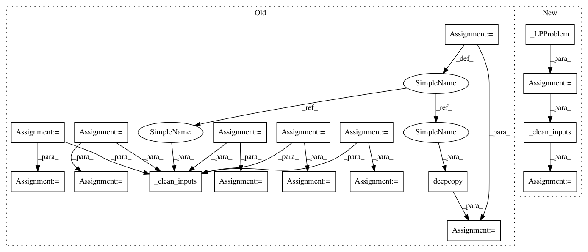

f1e6577b856fa088ad1af728d8387d1932658ce4,scipy/optimize/tests/test__linprog_clean_inputs.py,,test_aliasing2,#,38
Before Change
def test_aliasing2():
c = np.array([1, 1])
A_ub = np.array([[1, 1], [2, 2]])
b_ub = np.array([[1], [1]])
A_eq = np.array([[1, 1]])
b_eq = np.array([1])
bounds = [(-np.inf, np.inf), (None, 1)]
c_copy = c.copy()
A_ub_copy = A_ub.copy()
b_ub_copy = b_ub.copy()
A_eq_copy = A_eq.copy()
b_eq_copy = b_eq.copy()
bounds_copy = deepcopy(bounds)
_clean_inputs(c, A_ub, b_ub, A_eq, b_eq, bounds)
assert_allclose(c, c_copy, err_msg="c modified by _clean_inputs")
assert_allclose(A_ub, A_ub_copy, err_msg="A_ub modified by _clean_inputs")
assert_allclose(b_ub, b_ub_copy, err_msg="b_ub modified by _clean_inputs")
After Change
def test_aliasing2():
lp = _LPProblem(
c=np.array([1, 1]),
A_ub=np.array([[1, 1], [2, 2]]),
b_ub=np.array([[1], [1]]),
A_eq=np.array([[1, 1]]),
b_eq=np.array([1]),
bounds=[(-np.inf, np.inf), (None, 1)]
)
lp_cleaned = _clean_inputs(lp)
assert_allclose(lp_cleaned.c, lp.c, err_msg="c modified by _clean_inputs")
assert_allclose(lp_cleaned.A_ub, lp.A_ub, err_msg="A_ub modified by _clean_inputs")
assert_allclose(lp_cleaned.b_ub, lp.b_ub, err_msg="b_ub modified by _clean_inputs")
In pattern: SUPERPATTERN
Frequency: 4
Non-data size: 18
Instances
Project Name: scipy/scipy
Commit Name: f1e6577b856fa088ad1af728d8387d1932658ce4
Time: 2019-08-13
Author: chelsea.liu@datadoghq.com
File Name: scipy/optimize/tests/test__linprog_clean_inputs.py
Class Name:
Method Name: test_aliasing2
Project Name: scipy/scipy
Commit Name: f1e6577b856fa088ad1af728d8387d1932658ce4
Time: 2019-08-13
Author: chelsea.liu@datadoghq.com
File Name: scipy/optimize/tests/test__linprog_clean_inputs.py
Class Name:
Method Name: test_aliasing2
Project Name: scipy/scipy
Commit Name: f1e6577b856fa088ad1af728d8387d1932658ce4
Time: 2019-08-13
Author: chelsea.liu@datadoghq.com
File Name: scipy/optimize/tests/test__linprog_clean_inputs.py
Class Name:
Method Name: test_aliasing
Project Name: scipy/scipy
Commit Name: 0fbce92e3ecf2dae1c4819d4c970724184d12d41
Time: 2019-10-27
Author: chelsea.liu@datadoghq.com
File Name: scipy/optimize/tests/test__linprog_clean_inputs.py
Class Name:
Method Name: test_aliasing2
Project Name: scipy/scipy
Commit Name: 0fbce92e3ecf2dae1c4819d4c970724184d12d41
Time: 2019-10-27
Author: chelsea.liu@datadoghq.com
File Name: scipy/optimize/tests/test__linprog_clean_inputs.py
Class Name:
Method Name: test_aliasing